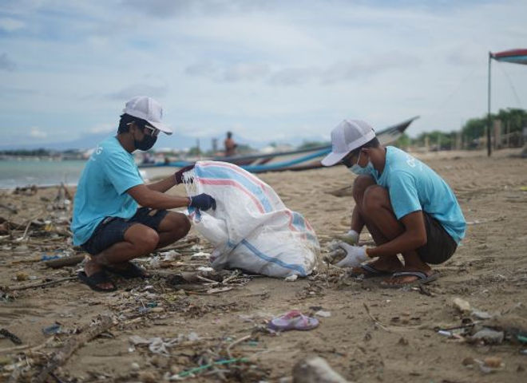
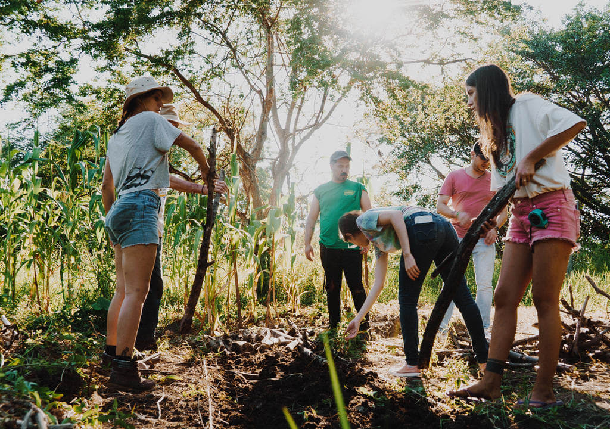
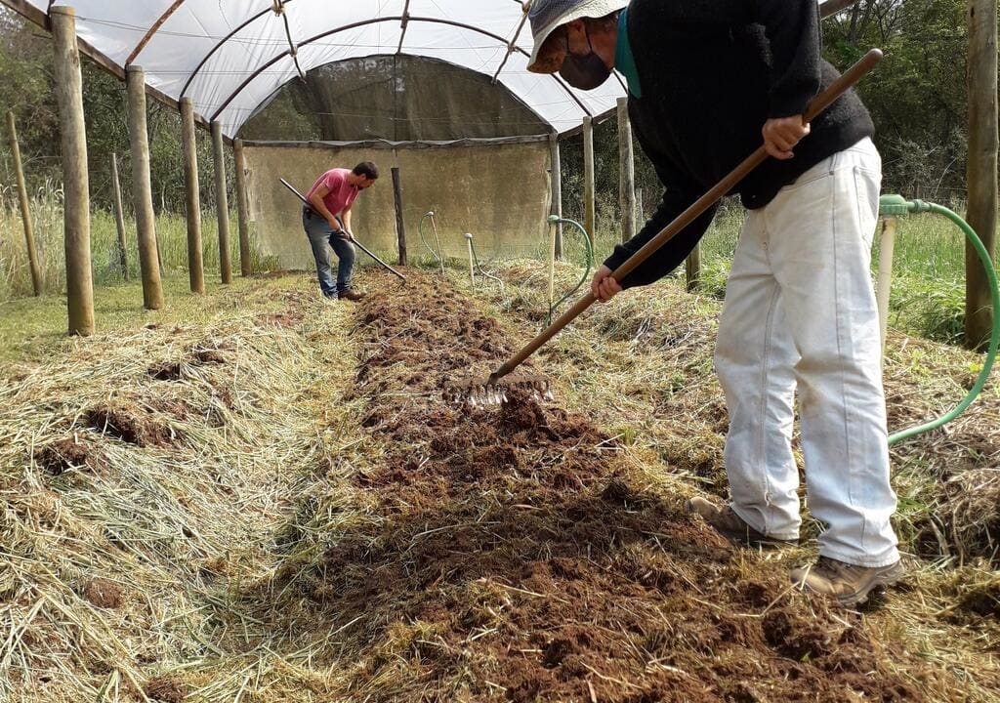

Repositório de Projetos
Faça parte de uma comunidade que transforma o mundo!

Beach Clean UP
O foco principal da iniciativa é recolher o lixo das praias. Outro objetivo é conscientizar a população a assumir nosso papel como responsáveis pelo impacto que causamos no mundo.
Faça Parte!

Sítio Galeria
O Sítio Galeria trabalha com os princípios de Permacultura e práticas agroflorestais com o objetivo de reflorestar a sua área. Procuram voluntários dispostos a colaborar com cuidado com animais, manutenção dos jardins e hortas.
Faça Parte!

NeoRural
O Sítio NeoRural tem como proposta vivenciar a vida no campo de forma mais adaptada às pessoas que vivem na cidade. Ou seja, plantio, processamento de alimentos, tratamento de animais, etc.
Faça Parte!